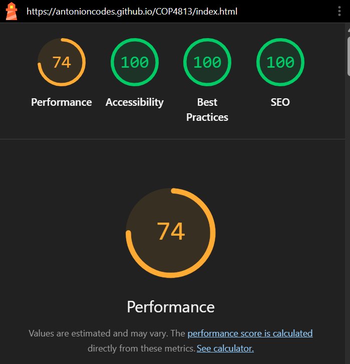
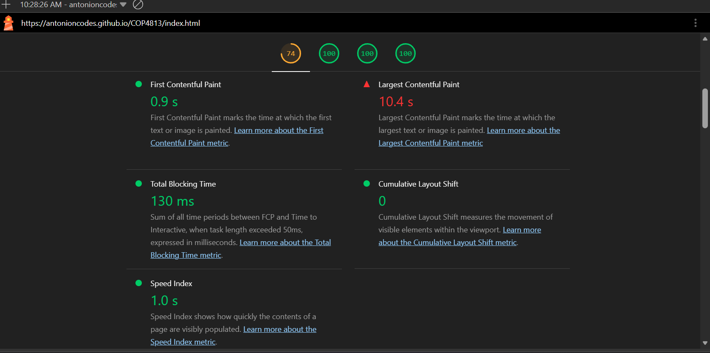
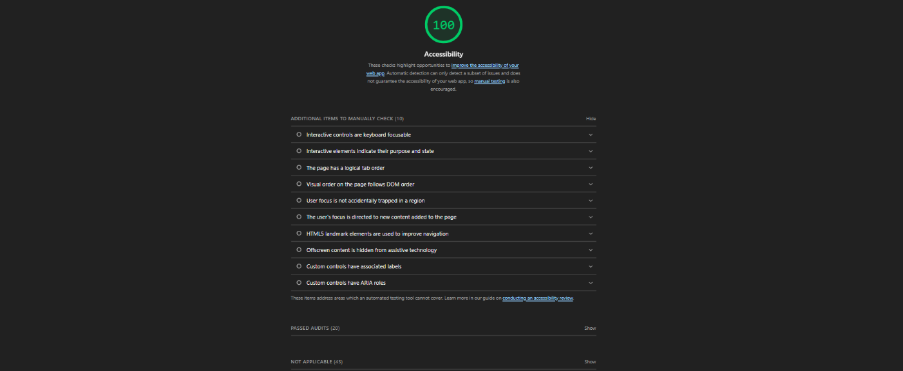
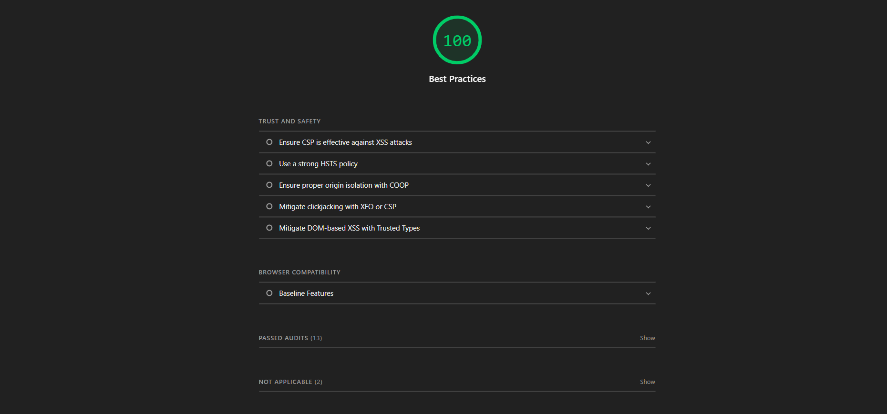

Purpose of the Audit
I tested my website using Google Chrome Lighthouse in Mobile mode and Navigation mode to evaluate Performance, Accessibility, Best Practices, and SEO.
Overall Lighthouse Results
- Performance: 74/100
- Accessibility: 100/100
- Best Practices: 100/100
- SEO: 100/100
The website received scores of 100 in Accessibility, Best Practices, and SEO. Performance received 74, indicating that there may be opportunities to improve the mobile loading experience.
Overall Results Screenshot

Performance Analysis
The Performance score was 74/100. First Contentful Paint was 0.9 seconds, while Largest Contentful Paint was 10.4 seconds. Total Blocking Time was 130 milliseconds, Cumulative Layout Shift was 0, and Speed Index was 1.0 seconds.
Lighthouse identified opportunities to improve image delivery and browser cache lifetimes. It also reported four long main-thread tasks. These findings show areas where the mobile loading experience could be improved.
Performance Screenshot

Accessibility Analysis
Accessibility received 100/100. Lighthouse did not identify any accessibility scoring issues in this test.
Accessibility Screenshot

Best Practices Analysis
Best Practices received 100/100 in this Lighthouse audit.
Best Practices Screenshot

SEO Analysis
SEO received 100/100 in this Lighthouse audit.
SEO Screenshot
Conclusion
The audit showed strong results in Accessibility, Best Practices, and SEO. The Performance score of 74/100 provides an opportunity to investigate improvements to the mobile browsing experience.
These results reflect the website at the time of testing.